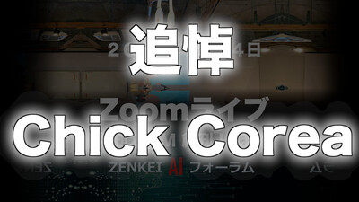
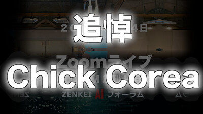

ZAF ２０２１年１０月２７日
＜今回のテーマ＞
秋の夜長は
コーディング
パート２
目次
- 前座 [6:30 - 7:00]
- メイン『２０２１年版 NLP を完全に理解する』第２回
Seq2Seq に戻って Attention を完全に理解する- 第１部 [7:00 - 8:00] 理論編（論文を読む）
- 第２部 [8:00 - 9:00] 実践編（プログラミング）
- 今日のおわりに
- 総合目次
前座
毎日更新、ポッドキャスト
- ポッドキャスト、その後、毎日更新中！


- ８月の ZAF の後 (8/27 Fri) から、ほぼ毎日更新
- 9/19 (Sun) 以降は完璧に毎日、更新中


進行状況
- 9/26 から：シーズン１３ (ZAF-2101）


- 10/3 から：シーズン１４ (ZAF-2102）
 



- 10/13 から：シーズン１５ (ZAF-2103）


- 10/28 から：シーズン１６ (ZAF-2104） 配信予定
遂に明かされる！
なぜ「コンピュータ会話教室」第１回が
「for ループ」だったのか！！
乞うご期待！
ZENKEI AI SELECTIONS
振り返り
（ポッドキャスト シーズン９からは、対応する YouTube ビデオもあります）


Podcast Ranking
それで、毎日更新の成果はあったのか？

- Podcast Ranking
これまでの最高順位は- 「自然科学」で１１位
- 「科学」で８０位
- ９月２２日でのランキングが最高
- 最近の動向はこんな感じ


前座 目次
『２０２１年版 NLP を完全に理解する』第２回
Seq2Seq に戻って
完全に理解する
第１部：理論編
Seq2Seq に戻って
完全に理解する
第１部：理論編
（論文を読む）
イントロダクション
- 前回の復習
- Transformer 勉強するぞ、から
- 論文 "Attention Is All You Need" は、読んだ
- 腹落ちしない
- （まだ手は動かしてない）
- Attention を理解しよう、と
- Bahdanau, Cho, Bengio
"Neural Machine Translation By Jointly Learning To Align and Translate"
を精読
- Bahdanau, Cho, Bengio
- 実装した
- 計算した
- attention の効果、出ない...
- Transformer 勉強するぞ、から
- 今回
- Seq2Seq まで戻って、きちんとやろう
- すると GRU をきちんと理解することが必要になって
- すると、そもそも RNN できちんと bidirectional が 分かってないことが分かって
- と、海の底にまで潜ってきて、無事に海面に戻ってきた（はず）
- Seq2Seq まで戻って、きちんとやろう
- Seq2Seq with Attention 完全に理解した
今回読む論文
- （１）Bahdanau, Cho, Bengio (2014) - 前回読んだ論文（Seq2Seq with Attention）
- （２） Schuster & Paliwal (1997) - Bidirectional RNN の論文
- （３） Cho et al. (2014) - 今回読むメインの論文（Seq2Seq）
前回読んだ Bahdanau, Cho, Bengio の補足
- ZAF-2109 で精読した論文
- "Neural Machine Translation By Jointly Learning To Align and Translate"
by Bahdanau, Cho, Bengio arxiv: 1409.0473 (local copy)
- "Neural Machine Translation By Jointly Learning To Align and Translate"
- （１）RNN (GRU) に Attention を入れる方法について
- （２）proposed updated state s~i の式について
- この違いは、意味が多少変わってくる
- r という「リセット」が、何に対する「リセット」なのか、という意味
- 実際の処理上、影響がどれくらいあるのかは、あまりきにしなくてもいいかな
- 実際に比較した結果は、大きな違いは見られなかった
- 以上２点は、先月のコメント
- 以下、追加のコメント

- （３）decoder の出力の処理の部分を、前回はすっかりスキップしてた
- Ian Goodfellow の Maxout を使うっていうところ
（本文）

（Appendix）

- （今日読む論文 Cho et al. のところで詳述）
- Ian Goodfellow の Maxout を使うっていうところ


- （４）実装部分で、 bidirectional の hidden states の展開の仕方が間違っていた
- （実装編で詳述）
- ちなみに、ここで引用されていた BiRNN の論文を、次にきちんと読む


Bidirectional RNN の論文
- (Schuster & Paliwal, 1997)
"Bidirectional recurrent neural networks"
IEEE Transactions on Signal Processing, 45(11), 2673–2681.

- Bahdanau, Cho, Bengio の論文に BiRNN の出典として引用されていた論文
- multi-layer にするとき、さて、どう実装するのか……
- という話は、実装編で


Cho et al. 2014 - Seq2Seq 論文を精読
- (Cho et al., 2014b)
arxiv: 1406.1078 (local copy)
"Learning Phrase Representations using RNN Encoder-Decoder for Statistical Machine Translation"
(Cho, ..., Bahdanau, ..., Bengio)
- 著者名を見ると分かる通り、この論文は Bahdanau, Cho, Bengio の Attention の論文の前身
- この論文自体には、歴史的にいうと２つのポイントがあって
- １つは Seq2Seq の提案

- もう１つは GRU という RNN モデルの提案


- １つは Seq2Seq の提案
- 前回、 Bahdanau, Cho, Bengio を精読した時に遭遇した GRU の詳細
- この元論文 (Cho et al.) で確認すると、
- （１） GRU の定義は本文で与えられている（上のスクショ）
- （２） Seq2Seq の Encoder 部分は、本文の形式で与えられている

- （３） Seq2Seq の Decoder 部分は、
（当然 context vector も入ってきて）
pytorch 形式の GRU になっている

- 前回、 Bahdanau, Cho, Bengio を精読した時にスキップした
最終ステップの処理は、同等のものが（ちょっと詳しく）書かれてある

- ただし、まだ分からない点が残ってる
- 行列 G を分割している部分のポイントが全く分からない
- （詳しくは、実装編で）


第１部：理論編（論文を読む） 目次
『２０２１年版 NLP を完全に理解する』第２回
Seq2Seq に戻って
完全に理解する
第２部：実践編
Seq2Seq に戻って
完全に理解する
第２部：実践編
（プログラミング）
- （１）Bidirectional RNN を完全に理解する
- （２）RNN (GRU) への context vector の導入方法
- （３）Maxout ユニットについて
Bidirectional RNN を完全に理解する
- (Schuster & Paliwal, 1997)
"Bidirectional recurrent neural networks"
IEEE Transactions on Signal Processing, 45(11), 2673–2681.
- スクラッチから RNN を実装する
（ことで、Bidirectional RNN を完全に理解章）- pytorch の torch.nn.RNN には、すでに bidirectional オプションが付いている

- このレイヤーは、その他に num_layers も指定できる
（多層 RNN を構成できる） - pytorch の実装には、RNN の最小ユニット torch.nn.RNNCell もある


- pytorch の torch.nn.RNN には、すでに bidirectional オプションが付いている


pytorch との一対一の比較
RNN (RNNCell)
- RNNCell レベルでの実装 (myRNNCell)

- torch.nn.RNNCell との比較


Bidirectional 1-Layer レベル
- （これは pytorch には存在しない）
- 比較は RNN で num_layers=1 として行う
- myRNN1
- torch.nn.RNN (num_layers=1) との比較
- ２つのモデルを構成


- pytorch のモデルの weights を myrnn にセット

- 同じ入力ベクトルに対して、それぞれの出力を比較


- ２つのモデルを構成


Bidirectional multi-Layer レベル


GRU に対して、同様に
- pytorch の torch.nn.GRUCell


- pytorch の torch.nn.GRU


|
myGRUCell
|
myGRU1
|
（コメント）RNN レイヤーのバイアスについて
- RNN レイヤーは feedforward NN (fully connected layer, nn.Linear) の単純な拡張になっている
- feedforward NN (fully connected layer, nn.Linear)
y = f( W・x + b )
- 入力： x
- 出力： y
- アクティベーション（非線形関数）： f()
- パラメータ： W, b
- RNN （例えば torch.nn.RNNCell ）
h’ = tanh( Wx・x + bx + Wh・h + bh )
- 入力： x, h
- 出力： h’
- アクティベーション（非線形関数）： tanh()
- パラメータ： Wx, bx, Wh, bh
- 疑問：バイアス項 bx と bh
は冗長ではないか？
- つまり bx か bh の１つを残せば十分じゃないか？
- bias オプションがあるが、 False の場合、両方とも（？）落とすようになるみたい
- この構造は、基本的に GRU も同様
- まぁ、大した違いではないですが
RNN (GRU) への context vector の導入方法
- Seq2Seq の構造についての考察

- 上の図の赤丸で囲ったそれぞれの「RNN ユニット」に注目する
- Encoder の RNN ユニットは２つの入力に対して１つの出力を持つ
- 入力： x, h
- 出力： h
- （論文より）

- Decoder の RNN ユニットは３つの入力に対して１つの出力を持つ
- 入力： y, h, c
- 出力： h
- （論文より）


実装上の問い
- 既存の RNN ユニット（２入力、１出力）を使って Decoder を実装したい
- 方法１：３つの入力を何らかの処理を行って「入力２つ」の形にする
- 前回ぼくが形式的に喋った方法も、その１つ
（RNN (GRU) に Attention を入れる方法について） - ２つのベクトルを concat して（大きな）１つのベクトルにして
２入力、１出力の形にする方法について - （簡単のため RNN で考える）
- （選択１）c を h に concat するか？
- plain な RNN は（バイアス項は簡単のため落とす）
h’ = tanh( Wx・x + Wh・h )
- 入力： x
- 出力： y
- パラメータ： Wx, Wh
- 行列のサイズは
- Wx: (hidden_size, input_size)
- Wh: (hidden_size, hidden_size)
- なので concat されたベクトル
p = concat(h, c) を作って、 RNN に渡すことを考えると
- plain な RNN は（バイアス項は簡単のため落とす）
- （選択２）c を x に concat するか？
- DIVE INTO DEEP LEARNING - Sequence to Sequence Learning

- うん、確かにこの方法だと、数学的には同じ形になりそうだ
（ただし RNN の場合、あと 1-layer の場合）
- DIVE INTO DEEP LEARNING - Sequence to Sequence Learning
- 前回ぼくが形式的に喋った方法も、その１つ

- 方法２：３つの入力を処理する RNN ユニットを実装する

実装
Maxout ユニットについて
- 前回 (ZAF-2109)
すっかりスキップしてた decoder の出力の処理の部分
- Ian Goodfellow の Maxout を使うっていうところ
（本文）
（Appendix）
- Ian Goodfellow の Maxout を使うっていうところ
- その論文の元論文である Cho et al. (2014) に、
この最終ステップの処理は、同等のものが（ちょっと詳しく）書かれてある
- ただし、まだ分からない点が残ってる
- 行列 G を分割している部分のポイントが全く分からない
- 論文を読んで、理解した範囲で、以下のように実装してみた


- ただし Maxout を使わない場合と比較して、大きく改善するようには見えない


結果
Spelling Bee
- no attention


- with attention


翻訳
- no attention


- with attention


{kind=link}
{kind=link}
{kind=link}
{kind=link}
{kind=link}
{kind=link}
{kind=link}
{kind=link}
{kind=link}
{kind=link}
{kind=link}
{kind=link}
{kind=link}
{kind=link}
{kind=link}
{kind=link}
{kind=link}
{kind=link}
第２部：実践編（プログラミング） 目次
今日のおわりに
……
今後の予定
- 次回 ZAF １１月２４日開催の予定です。
- ZAF 講演者、 ZAM 執筆者、絶賛、第募集中です！
お気軽にお問い合わせください！
総合目次
- 前座
- メイン『２０２１年版 NLP を完全に理解する』第２回
Seq2Seq に戻って Attention を完全に理解する- 第１部 理論編（論文を読む）
- 第２部 実践編（プログラミング）
- 今日のおわりに
おまけ
ポッドキャスト
ポッドキャスト
ZENKEI AI SELECTIONS
コンテンツ一覧
- ポッドキャスト シーズン９ (ZAF2009)
- ポッドキャスト シーズン１０ (ZAF2010)
- ポッドキャスト シーズン１１ (ZAF2011)
- ポッドキャスト シーズン１２ (ZAF2012)
- シーズン１３ (ZAF-2101）
- シーズン１４ (ZAF-2102）
- シーズン１５ (ZAF-2103）
- ZAM創刊号の印刷版きました！
- ZAM 印刷版の自慢と２月号のチラ見せ
- （新企画）コンピュータ会話教室（１）イントロ
- （新企画）コンピュータ会話教室（２）for ループ
- （新企画）コンピュータ会話教室（３）ベクトルと行列
- （新企画）コンピュータ会話教室（４）突然の数理クイズ
- （新企画）コンピュータ会話教室（５）伝わったかな？
- 東海道５Ｘ（１）構想など（ホンダナオさん）
- 東海道５Ｘ（２）よさげな浮世絵風建築画像と偽文字（ホンダナオさん）
- 東海道５Ｘ（３）写真と線画（ホンダナオさん）
- 東海道五十X プロジェクト（１）CycleGAN の紹介（大島圭祐さん）
- 東海道五十X プロジェクト（２）情景画像と浮世絵で検証（大島圭祐さん）
- 東海道五十X プロジェクト（３）TransGaGa の紹介（大島圭祐さん）
- 東海道五十X プロジェクト（４）ベクシンスキーの絵（大島圭祐さん）
- 東海道５Ｘの総括：ディスカッション